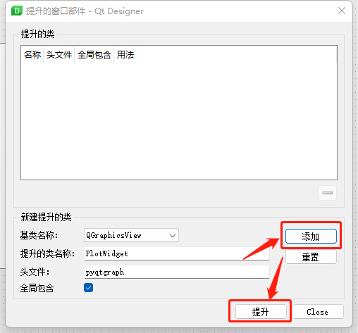
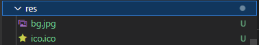
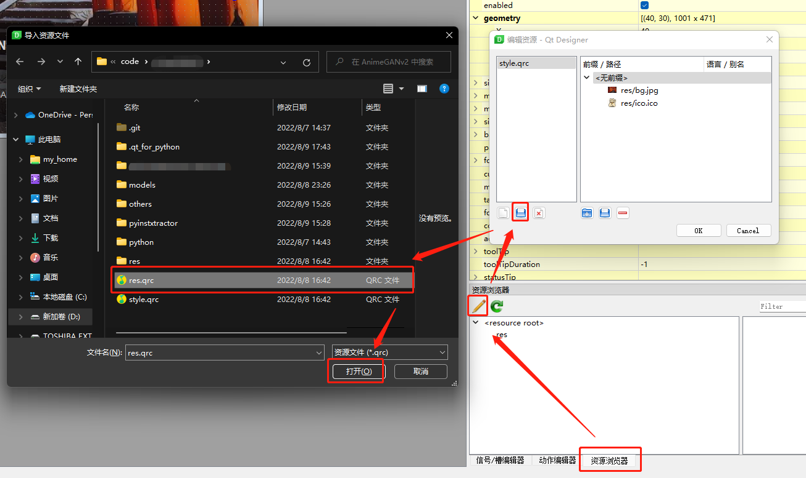
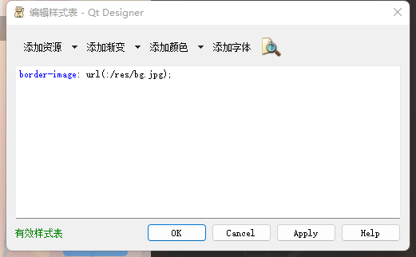
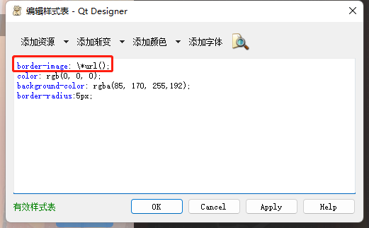

PySide2 的学习笔记
基本代码结构
最简单的Qt 应用程序的代码接口，如果需要扩展功能的话，基本上也是增加一些信号和插槽就好了：
import typing
import PySide2
from PySide2 import QtWidgets
from PySide2.QtWidgets import QApplication
from SignalGenerator import Ui_MainWindow
class MainWindow(QtWidgets.QMainWindow): # 自定义一个窗口类，可以继承QMain，也可以继承其他QWidget
def __init__(self) -> None:
super(MainWindow, self).__init__() #
self.ui = Ui_MainWindow() # 设置ui 属性，即从Qt Designer 中绘制的窗体
self.ui.setupUi(self) # 同上
self.ui.sg_btn_RefreshCOM.clicked.connect(self.print_data) # 在VSCode 中，按钮的clicked 属性并不会自动提示
def print_data(self):
print(self.ui.sg_slt_Databit.currentData())
if __name__ == "__main__": # main 方法中的代码基本不用变
app = QApplication()
win = MainWindow()
win.show()
exit(app.exec_())基本类型简介
QObject: Qt 的核心基类，提供了信号与插槽的机制
Application
Application 类主要用于一些App 的初始化工作，其内部应该有一些全局相关的属性。应该在程序入口进行初始化，并在程序结束前调用实例的app.exec() 开启消息循环。
QCoreApplication: 在没有UI 的情况下为Qt 应用建立事件循环机制，适用于无窗口应用。每个app 有且只有一个QCoreApplication对象QGuiApplication: 继承QCoreApplication，可以创建基于GUI 的应用程序并提供事件循环机制。同样是全局有且只有一个实例QApplication: 继承QGuiApplication，并额外提供了QWidget相关的功能，可以处理widget 组件的初始化、析构等。同样是单例的
Widgets
QWidget 可以派生出许许多多的子类，包括pyqtgraph 用到的组件最终也是继承到QWidget 类：
QWidget: 所有Qt UI 类的基类，从系统接收鼠标、键盘以及其他类型的事件，并负责绘制响应到屏幕QMainWindow: 通过组合不同的QWidget建立一个常用的窗口类，包含菜单栏、状态栏等
Threads
不要在主线程处理耗时操作，否则会造成程序假死；不要在子线程更新GUI，否则会造成意想不到的后果，或者程序崩溃；最好的实践是在子线程中发送信号、并在主线程中通过插槽处理信号并更新GUI。
QThread: 与Python 自带的线程功能区别不大，甚至连GIL 也是一样实现的。但在QThread中可以方便地调用匿名插槽、消息队列相关的功能：https://stackoverflow.com/a/1645666/14791867
Signal
from PySide2.QtCore import Signal, QObject
from PySide2.QWidgets import QMainWindow
class MySignal(QObject):
# 定义一个信号量，第一个参数表示接收信号的组件的类型，最后一个是以字符串传递信息，其实中间还有一个参数name
# 调用emit 方法时的参数必须要符合这里的规定
sig_one = Signal(QTextBrowser, str)
# 还可以定义更多的信号
sig_two = Signal(str)
sig_global = MySignal() # 信号可以在全局初始化
class MyWin(QMainWindow):
def __init__(self):
sig_local = MySignal() # 信号也可以限定在某个元素内部可用
sig_global.sig_one.connect(handler) # 指定处理函数
sig_global.sig_two.connect(handler2) # 指定
def handler2(self,control:QTextBrowser, val:str):
# 更新组件
pass
def handler2(self, val:str):
# 更新GUI
pass
# 其他函数，例如开启子线程
PyQtGraph
PyQtGraph在Qt Designer 中使用时，需要通过Graphics View组件提升（Promote）为相应的子类，如PlotWidget等，头文件可以直接填pyqtgraph。添加并提升：

PyQtGraph 是一个使用三方组件的绘图库。能够比较方便地实现绘图、选区、交互与数据联动的功能。并且其内置了flowchart 流程图绘制功能，基本能够满足常用的科学制图功能。
组件及布局
PyQtGraph 以QGraphicsView 为基类，分别派生出了：
- 绘图类：
PlotCurveItem折线图ScatterPlotItem散点图PlotDataItem折线图与散点图的组合
- 容器类：
PlotItem包含ViewBox、坐标轴和标签等子组件GraphicsLayout栅格布局，用于绘制多个图表ViewBox用于展示数据，支持与用户鼠标交互AxisItem坐标轴LabelItem标签（标题）
- 容器类（可作为Widget 嵌入App）：
PlotWidget绘制单个图形GraphicsLayoutWidget包含一个GraphicsLayout组件
其中各种Item 可以在代码中添加到图表中：
# 代码节选自官方examples
x2 = np.linspace(-100, 100, 1000)
data2 = np.sin(x2) / x2
p8 = win.addPlot(title="Region Selection")
p8.plot(data2, pen=(255,255,255,200))
lr = pg.LinearRegionItem([400,700])
lr.setZValue(-10)
p8.addItem(lr)线形（画笔和画刷）
可以自定义绘图中的点、线以及填充的样式，基本用法如下：
pen = Qpen('y', width=3, style=QtCore.Qt.DashLine)
pg.plot(x,y,pen) 设置背景
可以通过调用pg.setConfigOption('option', 'value') 来设置绘图的背景色、前景色、抗锯齿等效果。
资源文件
参考Qt Designer怎样加入资源文件，我们可以将图片等各种资源转化为*.py 文件，以下图两个图片为例：

我们可以在res 文件夹同级目录新建一个res.prc 文件，内容如下：
<RCC>
<qresource>
<file>res/bg.jpg</file>
<file>res/ico.ico</file>
</qresource>
</RCC>通过下图中的步骤可以将资源文件添加到ui 项目：

然后在控件中可以通过编辑样式表的形式引用已经添加的资源文件：

需要注意的是，Qt Designer 中，子控件会自动继承父控件的样式，如果不想这么做，则需要手工修改样式表，以禁止继承背景图片为例：

资源文件的转化
同ui 文件一样，资源文件也可以转化为.py 文件，供程序调用：
> pyside2-uic .\main.ui > ui_mainwindow.py # ui 文件转py
> pyrcc5.exe .\res.qrc -o .\res_rc.py # 资源文件转py，注意结果文件的文件名要以_rc 结尾可能是我安装了PyQt5 的原因，资源文件会被转化成下面的内容：
# -*- coding: utf-8 -*-
# Resource object code
#
# Created by: The Resource Compiler for PyQt5 (Qt v5.15.2)
#
# WARNING! All changes made in this file will be lost!
from PyQt5 import QtCore # 使用PySide2 的话，需要手工修改一下导入QtCore 的部分
qt_resource_data = b"\
\x00\x16\x00\x00\x00\x89\x50\x4e\x47\x0d\x0a\x1a\x0a\x00\x00\x00\
\x0d\x49\x48\x44\x52\x00\x00\x00\x97\x00\x00\x00\x97\x08\x06\x00\
"
qt_resource_name = b"\
\x00\x67\x00\x2e\x00\x6a\x00\x70\x00\x67\
"
qt_resource_struct_v1 = b"\
\x00\x00\x00\x00\x00\x02\x00\x00\x00\x01\x00\x00\x00\x01\
"
qt_resource_struct_v2 = b"\
\x00\x00\x00\x00\x00\x02\x00\x00\x00\x01\x00\x00\x00\x01\
\x00\x00\x01\x82\x7c\x9e\x1c\xe2\
"
qt_version = [int(v) for v in QtCore.qVersion().split('.')]
if qt_version < [5, 8, 0]:
rcc_version = 1
qt_resource_struct = qt_resource_struct_v1
else:
rcc_version = 2
qt_resource_struct = qt_resource_struct_v2
def qInitResources():
QtCore.qRegisterResourceData(rcc_version, qt_resource_struct, qt_resource_name, qt_resource_data)
def qCleanupResources():
QtCore.qUnregisterResourceData(rcc_version, qt_resource_struct, qt_resource_name, qt_resource_data)
qInitResources()资源文件不需要手工导入，它会在ui_mainwindow.py 文件中被自动调用。
📅2022-08-05 Aachen